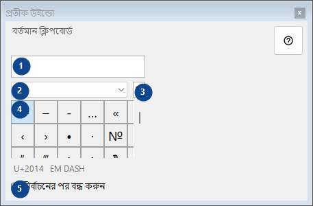
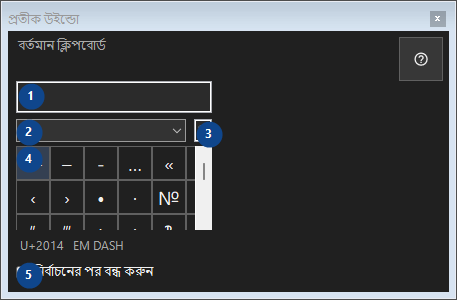

প্রতীক উইন্ডো
এর কাজ
বিরল প্রতীকের প্যালেট: ক্লিক করলে অক্ষরটি ক্লিপবোর্ডে কপি হয়; সবকিছু এই কম্পিউটারে থাকে।


ব্যবহারের ক্রম
নম্বর দেওয়া ব্যাখ্যাগুলি পড়ুন, প্রয়োজনীয় মান বেছে নিন এবং উইন্ডোর নির্দেশ দিয়ে এগিয়ে যান।
উপাদান
1. বর্তমান ক্লিপবোর্ড
বর্তমান ক্লিপবোর্ড
আপনার শর্টকাট2. প্রতীক সেট
প্রতীক সেট
আপনার শর্টকাট3. প্রতীক অনুসন্ধান করুন
নাম, কীওয়ার্ড বা Unicode কোড দিয়ে খুঁজুন
আপনার শর্টকাট4. প্রতীক গ্রিড
U+2014 EM DASH
আপনার শর্টকাট5. নির্বাচনের পর বন্ধ করুন
নির্বাচনের পর বন্ধ করুন
আপনার শর্টকাট